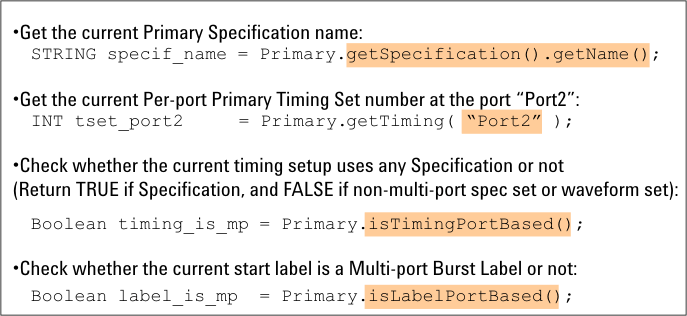

Other APIs Unique in Multi-port Test
The other APIs unique in the multi-port test are shown below:

For the syntax and more information on each test method API, refer to API Reference.
In this section, only the APIs that have the multi-port test unique functionality are listed. The APIs not listed here can also be used in the test method program for the multi-port test.